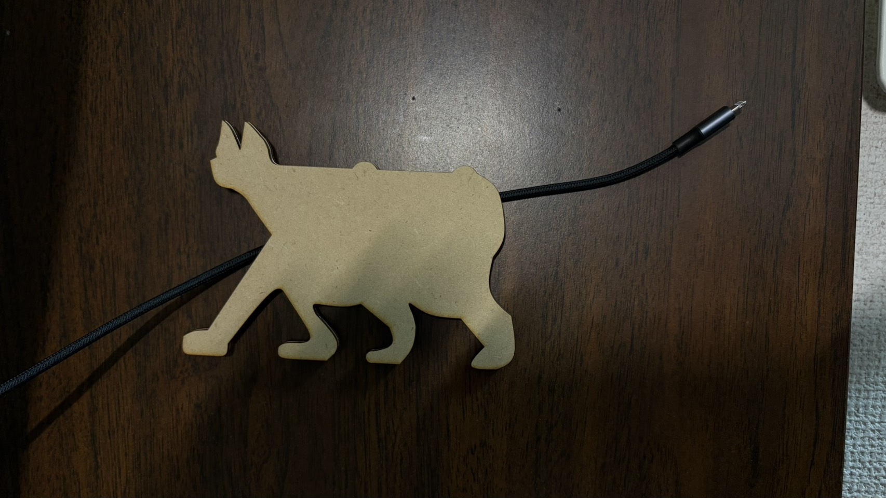
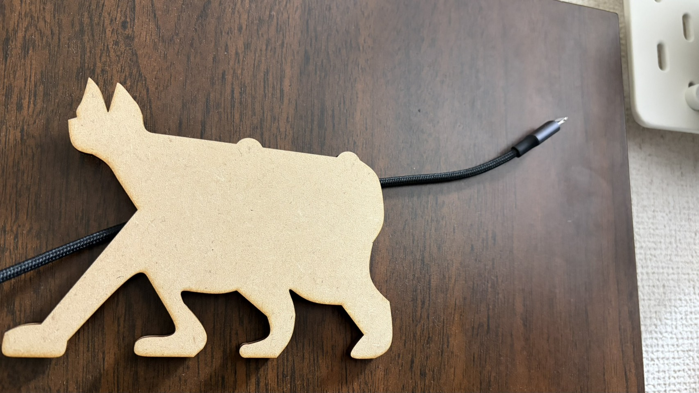
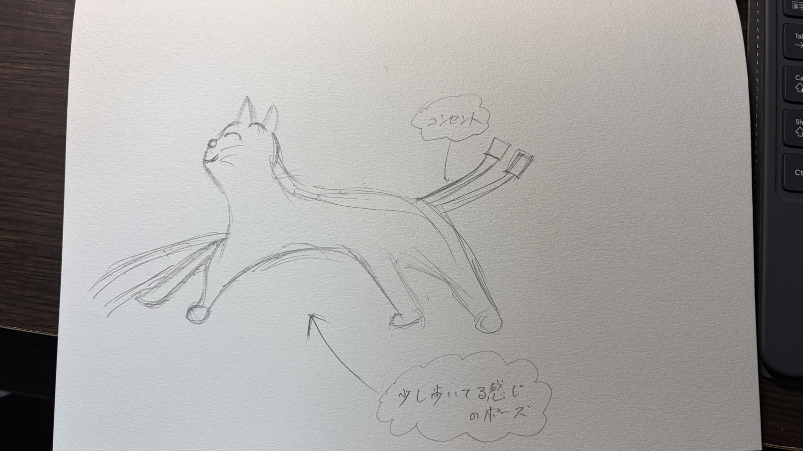

作品の説明
最近机の上にある充電ケーブルが邪魔＋おしゃれじゃないことに気付いた。ここから充電ケーブルをおしゃれに壁につけれたら便利なのではと思い制作した。
今回考えたのは充電ケーブルが猫のしっぽになるというものだが、ほかの動物でも作ることができるので再現性が高いと考える。
ただ今回壁につけ、かつケーブルを通すデザインが思いつかなかったのでシールでくっつけ代用した。ここからまだまだ器量をしていくことができると思う。
制作過程
スケッチ
